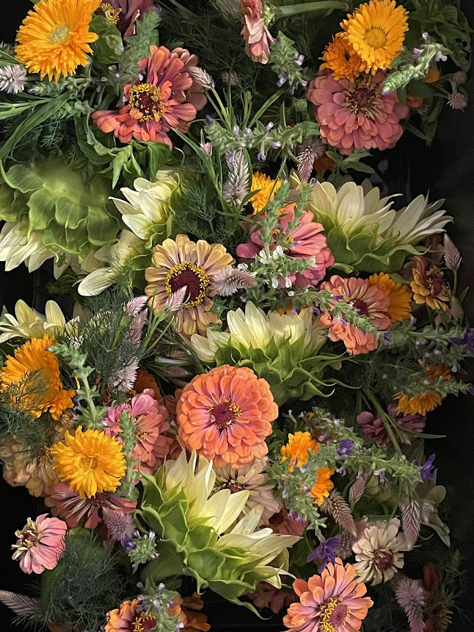

Cut Flowers
Seasonal bouquets featuring specialty flowers grown on the farm and harvested at their peak.

Nestled on the slopes of Haleakalā in Makawao, Kūʻono Farm is rooted in the belief that healthy soil grows healthy communities.
We cultivate specialty flowers, tropical fruit, culinary herbs, and meaningful connections between people and the land through regenerative agriculture, education, and shared experiences.


Seasonal bouquets featuring specialty flowers grown on the farm and harvested at their peak.
Custom floral installations, arrangements, and tablescapes designed for weddings, businesses, special events, and meaningful gifts.
A seasonal selection of tropical fruit grown using regenerative farming practices.
Fresh herbs cultivated for chefs, florists, home cooks, and local markets.
Farm dinners, intimate celebrations, retreats, and custom experiences surrounded by the beauty of Kūʻono Farm.
Hands-on educational workshops exploring flowers, farming, regenerative agriculture, and creative floral design.
We believe healthy soil grows healthy communities. Every flower harvested, every tree planted, and every gathering hosted is an opportunity to reconnect people with the land and celebrate the abundance that regenerative agriculture can create.